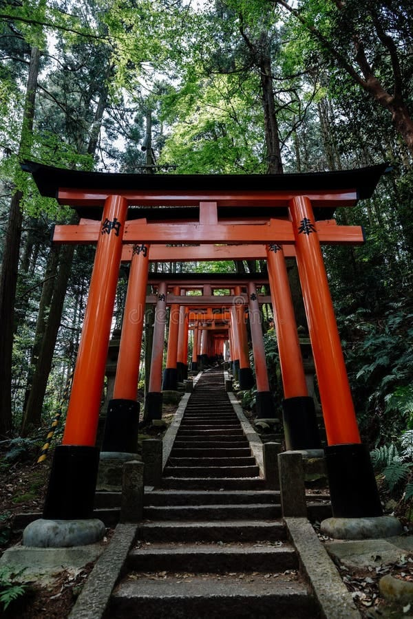

Co je to šintoismus?
Šintoismus (v japonštině Šintó – doslova „Cesta božstev“) není klasické náboženství založené na dogmatech, svatých knihách nebo jednom prorokovi. Jde o hluboce zakořeněný životní styl a způsob vnímání světa, který formuje japonskou kulturu už po tisíciletí. Učí lidstvo žít v absolutním souladu s přírodou a projevovat vděčnost všemu živému i neživému.
Svět obývaný duchy Kami
Základním pilířem šintoismu je víra v Kami. Tento pojem se často překládá jako „bohové“, ale přesnější význam zahrnuje duchovní energii, posvátné síly a podstatu přírody. Kami sídlí v majestátních horách, starých stromech, dravých řekách, ale mohou jimi být i duchové zemřelých předků. Celý svět je tak podle Šintó živý a protkaný božskou přítomností.
Koncept Kegare: Když se duše zakalí
Na rozdíl od západních náboženství šintoismus nezná pojem dědičného hříchu. Člověk se rodí čistý a dobrý. V průběhu života se však jeho duše může dostat do stavu zvaného Kegare (rituální znečištění nebo povadnutí ducha). Kegare není morální odsouzení, ale spíše nános duchovního prachu a únavy, který vzniká vlivem špatných skutků, kontaktu se smrtí, nemocí nebo hněvu. Tento stav člověka odděluje od Kami a bere mu vnitřní klid.
Sodomie a pozemské poklesky
V nejstarších šintoistických modlitbách a rituálních textech, známých jako Norito, se setkáváme s rozdělením hříchů na nebeské a pozemské (Kuni-no-cumi). Mezi tyto závažné pozemské poklesky a tabu, která způsobovala těžké rituální znečištění společnosti, patřily činy narušující přirozený řád komunity – například násilné činy, incest, poškození úrody nebo sodomie. Tyto prohřešky nevyžadovaly věčné zatracení v pekle, ale okamžité očištění celé komunity, aby se obnovil narušený mír.
Óharae: Síla Velké očisty
Protože je šintoismus ze své podstaty neuvěřitelně optimistický, věří, že každé znečištění i Kegare lze ze srdce smýt. K tomu slouží rituál Óharae (Velká očista), který se tradičně koná po celém Japonsku dvakrát do roka – koncem června a koncem prosince. Během tohoto obřadu kněží očišťují věřící pomocí rituálních pomůcek a symbolicky splachují veškeré nánosy negativní energie, hříchů a nečistot do řek a moří, čímž lidem vrací jejich původní jasné srdce (Magokoro).
Posvátná místa

Svatyně Fushimi Inari-taisha
Svatyně v šintoismu nejsou místa, kam by lidé chodili poslouchat kázání. Jsou to skutečné, pozemské domovy božstev Kami. Jedním z nejposvátnějších míst v celém Japonsku je komplex Fushimi Inari-taisha v Kjótu, zasvěcený božstvu rýže, zemědělství a obchodu Inari.
Tento komplex je světoznámý svými fascinujícími koridory, které tvoří více než 10 000 jasně oranžovo-červených bran Torii. Tyto brány lemují cesty stoupající hlubokým, tajuplným lesem na posvátnou horu Inari.
V šintoistické architektuře má brána Torii naprosto zásadní význam: funguje jako rituální předěl mezi profánním (obyčejným) světem lidí a posvátnou půdou bohů. Každý, kdo pod bránou projde, symbolicky vstupuje do čistého světa Kami.
Mýty a fakta
Pravda o Harakiri (Seppuku)
Mezi lidmi na Západě existuje častý mýtus, který rituální samurajskou sebevraždu, známou jako Harakiri nebo správně Seppuku, automaticky spojuje se šintoistickou vírou. To je však hluboký omyl.
Tento krvavý rituál byl striktní součástí morálního a vojenského kodexu samurajů zvaného Bushidó (Cesta bojovníka), který byl silně ovlivněn zenovým buddhismem a konfuciánstvím, nikoliv šintoismem.
Samotný šintoismus se smrti ze všech sil vyhýbá. Smrt a krev jsou v Šintó považovány za nejvyšší formu znečištění (Kegare). Šintoističtí kněží v minulosti nesměli na pohřby ani vstoupit. Z tohoto důvodu dodnes platí v Japonsku zajímavé rozdělení: svatby a oslavy života probíhají v šintoistických svatyních, ale smuteční pohřby jsou téměř výhradně záležitostí buddhistických chrámů.